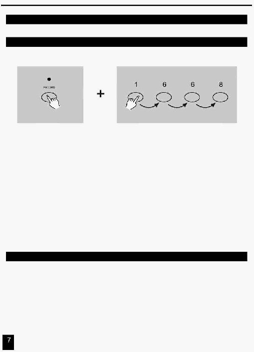

2. Опис інструкцій
2.1 Початок Програмування
2.1.1 Дозвіл Запису
1.
Натисніть й утримуйте кнопку Record (Запис).
2. Утримуючи кнопку Record , послідовно натисніть кнопки Flash 1, 6, 6 й 8.
3.
Відпустить кнопку Record, засвітиться індикатор Record, зараз Ви можете почати
програмування послідовності Ваших зразків (patterns).
ПРИМІТКА:
При першому включенні пульта, за замовчуванням, установлений Код Запису (Record Code)
послідовним натисканням кнопок Flash 1, 6, 6 й 8.
Ви можете змінити Код Запису, щоб захистити Ваші програми.
2.1.2 Безпека Ваших Програм
Для захисту Ваших Програм від редагування сторонніми особами Ви можете
змінити Код Запису (Record Code).
1.
Уведіть поточний Код Запису (Record Code) (Кнопки Flash 1,6,6 й 8).
2.
Одночасно натисніть й утримуйте кнопки Record й Edit.